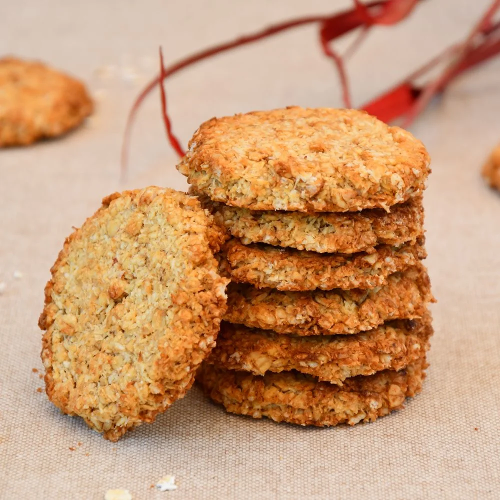

Galletas de Avena

Estas galletas de avena son crujientes y dulces, ideales para acompañar el café o disfrutar como snack.
Ingredientes:
- 2 tazas de avena
- 1 taza de harina
- 1/2 taza de azúcar
- 1/2 taza de miel
- 1/2 taza de mantequilla
- 1 huevo
Pasos:
- Precalentar el horno a 180°C.
- Mezclar la avena, harina y azúcar.
- Añadir la miel, mantequilla y huevo.
- Formar pequeñas bolas de masa y colocar en una bandeja.
- Hornear durante 12-15 minutos.
Enlaces:
Ver receta original en un portal externo
Ver receta de Pastel de Chocolate
Volver al Inicio